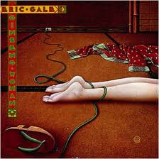
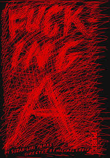
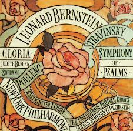
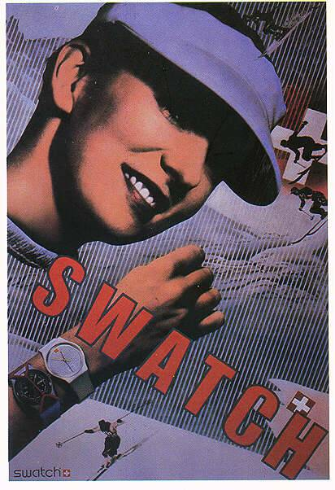
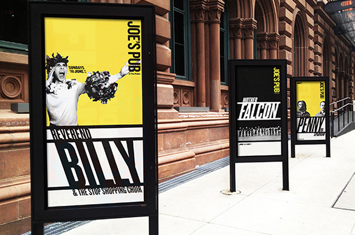
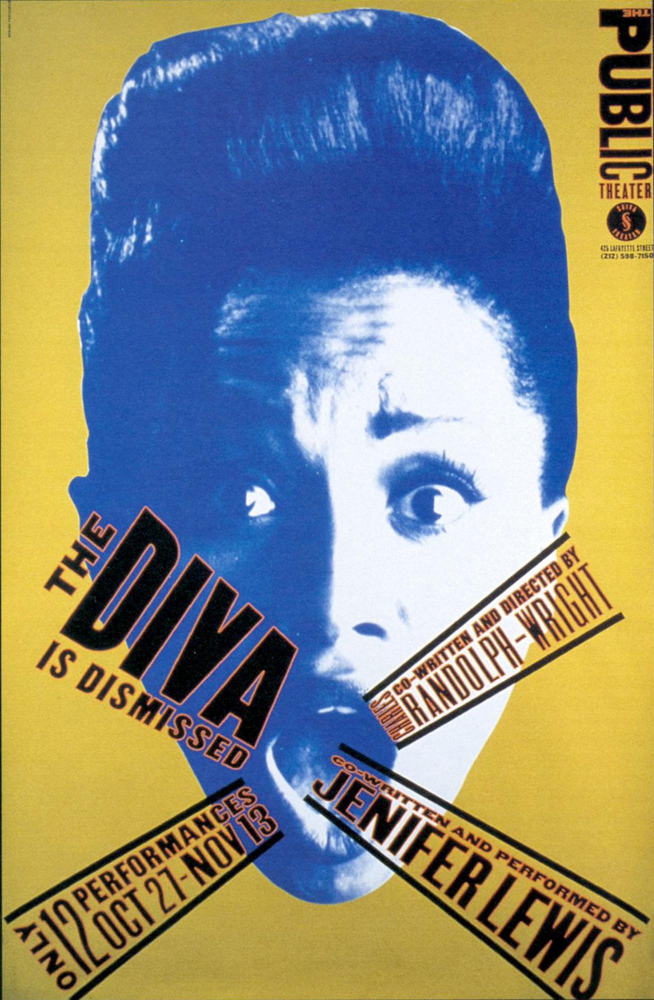
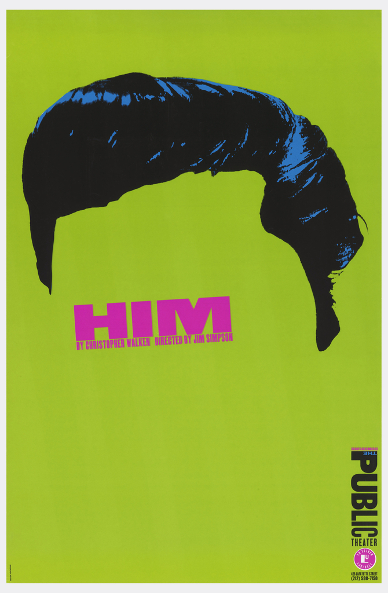
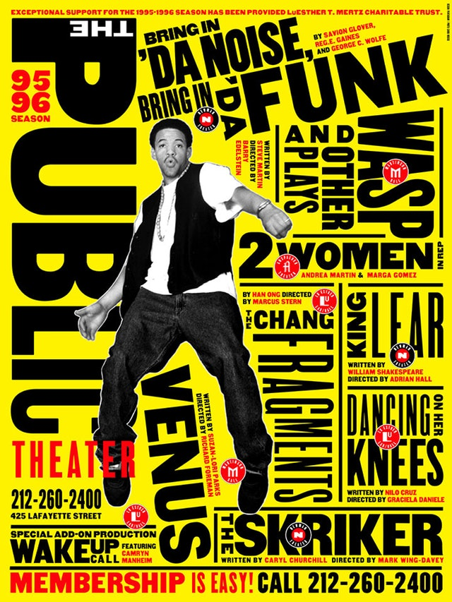
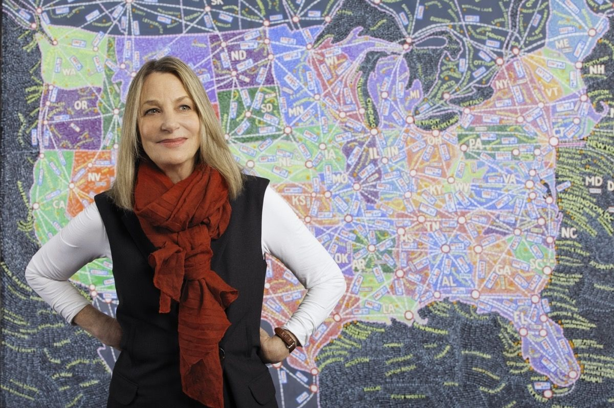
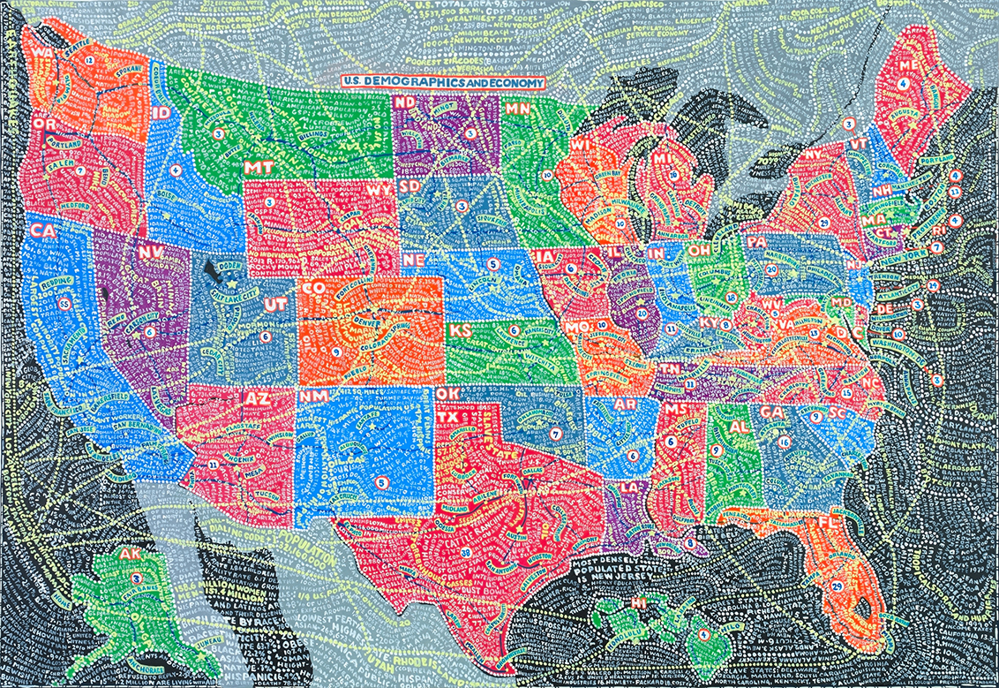

#
ABOUT
1948 The beginning
Paula Scher is an American Graphic Designer, she was born in 1948 in Washington DC, In the early days of her childhood, she and her family moved around quite a bit the last being Silver Spring Maryland where she studied Fine Arts at the Tyler School of Art where she graduated with a bachelor’s degree at the age of 22. She later moved to New York City where she worked as a layout artist for Random House's children's book sector.
Top#
CAREER
1972 CBS Records
In 1972 Paula worked for the advertising and promotions department at CBS Records for 2 years. Wanting to take a chance at a more creative endeavor she left CBS and joined Atlantic Records. There she began to develop her design skills, designing the first of her album covers and very quickly was promoted to art director for the company. One year passed and Paula made the decision to go back to CBS assuming the same position as art director for the cover department. During her eight years with CBS she would design up to 150 covers each year, some of which are shown below:
  “I didn’t even know I had a great job. I was just a kid!” ― Paula Scher
“I had moved to New York and no one even knew what graphic design was, it was just the 70s,” ― Paula Scher
1982 Russian constructivism
Leaving CBS to work on her own, Scher began to develop a typographic solution, using Russian constructivism and Art Deco as her inspiration and incorporated it in her work.
1984 Koppel & Scher
In 1984 Paula and editorial designer Terry Koppel co-founded Koppel & Scher. Their partnership continued for several years where they produced a range of identities, book jackets and advertising, including the infamous Swatch poster.
1991 Pentagram
Terry Koppel took the roll as Creative Director at Esquire magazine, when things at the Koppel & Scher studio began to go south, Scher joined Pentagram as a partner based in New York City. She has been a principal at the Pentagram design consultancy ever since, having some of the world’s biggest creative clients under her belt, not to mention being the first female partner within the company.
Top#
DESIGN
1994 The Public Theatre, Shakespeare in the Park
Scher took on the challenge of being the first designer to create a new distinct look for The Public Theatre, a program that became the turning point of identity and individuality in the design world. This program has been a major influence to theatre promotion projects and for cultural institutes all around the world.
Setting a new bar for typography in the 1990s, Scher’s graphic campaign for New York's Public Theater revolutionised its identity one poster after another. In a report by ‘Making Music Modern’ Scher’s work was described as using “unorthodox spacing, mixing font colors and weights, and employing uncommon and often historic typefaces, Scher's text-heavy poster presents a large amount of information in a dynamic and expressive way.” - manualzz.com
 “I just remember that everything looked the same-all style and no substance” ― Paula Scher, Make It Bigger
“I love the big scale and immediate impact of posters. They're my favourite things to design.” ― Paula Scher
Scher's identity for the Public Theater emphasises the word "public" mainly to showcase the institution as the affordable and accessible venue that it is. In 1995, Scher in conjunction with Pentagram, designed a promotional campaign for the production of Savion Glover's Bring in 'da Noise, Bring in 'da Funk showing in the Public Theatre.
“My work is play. And I play when I design. I even looked it up in the dictionary, to make sure that I actually do that, and the definition of 'play,' number one, was 'engaging in a childlike activity or endeavor,' and number two was 'gambling.' And I realize I do both when I'm designing.” ― Paula Scher
They featured the wood typefaces used throughout, two dimensional photographs and bold solid colors for the theater's posters and billboards displayed all over the city. Limiting the colors to two or three and highlighting the play’s title that surrounded the tap artist in a fresh jazzed up style really made the design eye catching. The aim was to appeal to a wide range of people from the city and outer borders, the campaign has now become a seasonal tradition in the city.
Top“If you look through design history and you see something that looks really radical, that’s what you’re going to be doing now. If you think that’s nice, that’s what you’ve already been doing. If you think it’s tired, that’s what you were doing five years ago. But if you think it’s ugly, that’s what you’re going to be doing in five years.” ― Paula Scher
Maps
In the 1990s, Paula Scher began painting bold, colorful maps of the world, using her new typographic style. Displaying it continents, countries, islands, oceans and cities, she painted the world as she sees it. The larger her canvases became, the more detailed her geographical visions became, displaying the very streets and neighborhoods we live in. With a revelating display of image and type, these creations reached as big as twelve feet in size. These images where swirling in torrents of information and clever commentary related to the location.
 Architecture
Paula Scher has created many clever designs integrating typography into architectural spaces. She works often with signage as well. She has designed work for everything from museums, to schools, to parking garages.
In 2007, Paula Scher created screen-prints of NYC Transit and Manhattan. Painted in the style of the previous Maps collection, this project also displays the subway system in thick colour coded lines, and subways stations marked as thick circles. It portray New York City as the busy, chaotic destination it is known for world wide.
In 2010, Paula Scher installed 2 stunningly detailed murals in the atrium and commons in the Queens Metropolitan Campus in New York. Sized at over 2,430 square feet they display New York City in the style of the previous Maps collection. Students and visitors can stand in these rooms, surrounded by walls bursting with vibrant colours. Misspelled words and locations, mimic the learning process that even Scher is a part of, displaying the relaxed sense of fun and enjoyment the artist had whilst creating these beautiful installments.
Logos & Branding
Throughout her career, Scher has created and developed many identities and branding systems for various clients that include:
- CitiBank Logo
- Bloomberg,
- Microsoft,
- Bausch + Lomb,
- Coca-Cola,
- Shake Shack,
- Perry Ellis,
- Museum of Modern Art(MOMA),
- Sundance Institute,
- High Line,
- Jazz at Lincoln Center,
- Metropolitan Opera,
- New York City Ballet,
- New York Philharmonic,
- New Jersey Performing Arts Center,
- New 42nd Street,
- New York Botanical Garden,
- United States Holocaust Memorial Museum,
- Philadelphia Museum of Art,
- Robin Hood Foundation,
- and the New York City Department of Parks and Recreation.
#
BOOKS & FILM
- (2002) Make it Bigger. New York: Princeton Architectural Press, Scher, Paula.
- (2011) Maps. New York: Princeton Architectural Press.
- (2016)The Brownstone, Princeton Architectural Press, Scher, Paula.
Pentagram’s Paula Scher is featured in a documentary series on Netflix 'Abstract: The Art of Design'. The show explores the lives and ideas of leading figures in design and architecture, with each episode focusing on a single creator and their practice.
In this feature Paula talks about how the lack of female graphic designers is a constant discussion within the industry, and during Abstract Paula recalls back to the 70s when all women were in organisational roles, agents or reps.
Top“I would sit there and think ‘oh my god what are they gonna do with me, what am I gonna do with them.” ―Paula Scher
#
AWARDS
During the course of her career, Paula Scher has received hundreds of industry honors and awards, some of which are:
- 1998 - Art Directors Club Hall of Fame,
- 2000 - Chrysler Award for Innovation in Design,
- 2001 - AIGA Medal (profession’s highest honor),
- 2006 - Type Directors Club Medal (first woman to receive the prize),
- 2012 - Philadelphia Museum of Art’s Design Collab Award,
- 2013 - National Design Award for Communication Design.
#
CONCLUSION
It can be difficult to fathom the creative mind of another, or to isolate that unique spark of creative genius. It is something that takes more than conventional thought, it derives from our emotions, intellect and even our moral characteristics, all we can do as a designer is show the world how we see it.
Whilst researching Paula Scher's life and career, I found it particularly fascinating how her love for pop culture and fine art coincide in her work making it diverse and relatable, as well as bold and expressive. Establishing herself as a graphic designer, illustrator, painter, author, art educator, and speaker for over 40 years Paula has certainly became an Icon to myself and my generation. Its intriguing how her life in the city has influenced her career and brand as a designer. I found this is shown specifically through the Maps and Transit Projects. Her creativeness and ability to always pushed through boundaries is inspiring. Her work is relatable and welcoming to everyone and this I believe is why she has vastly became an Iconic figure within the graphic design industry, greatly influencing Design Culture as we know it.
Top#
BIBLIOGRAPHY